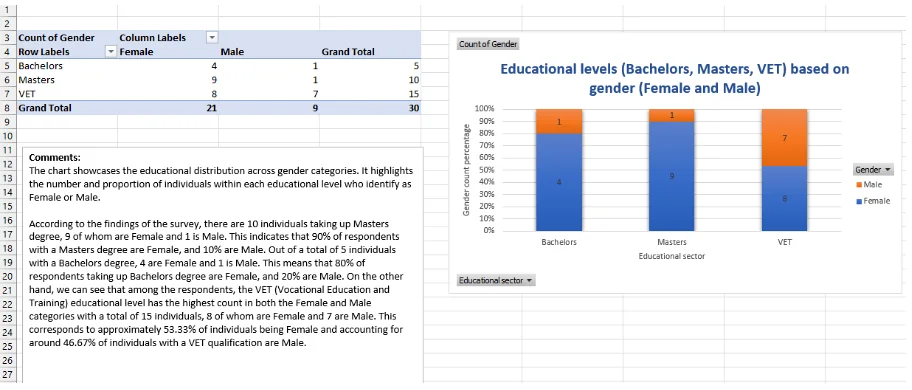
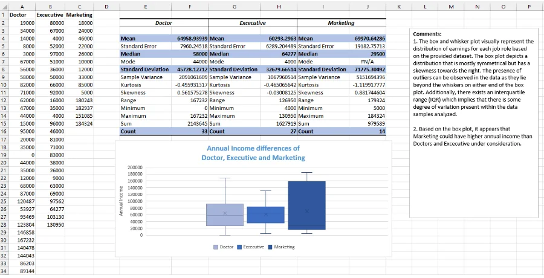
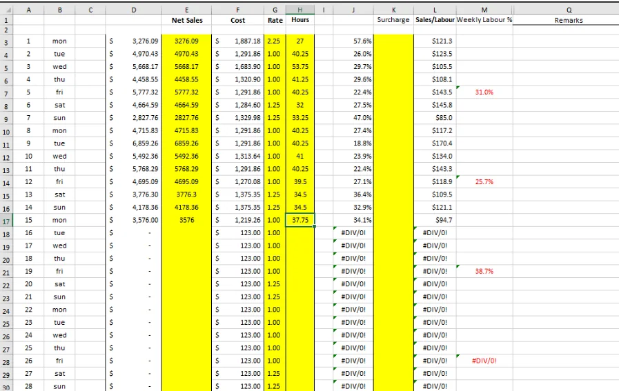
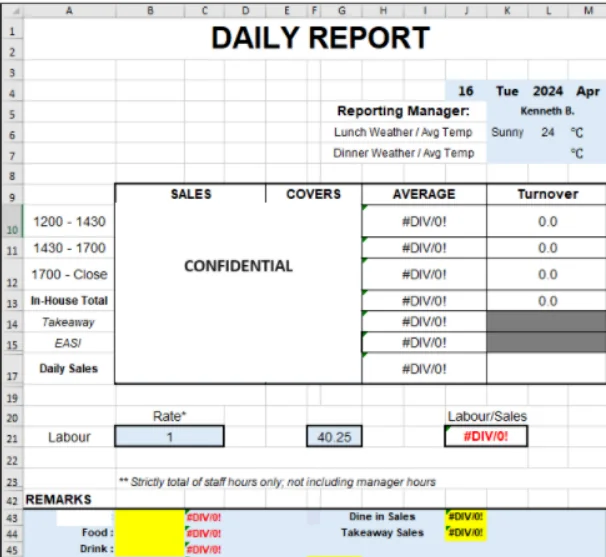
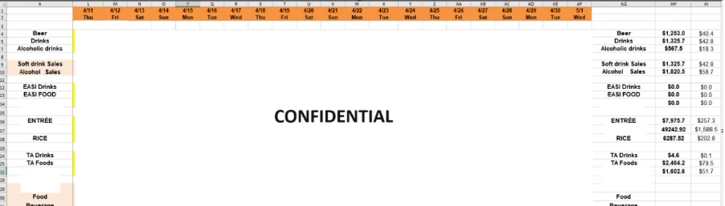
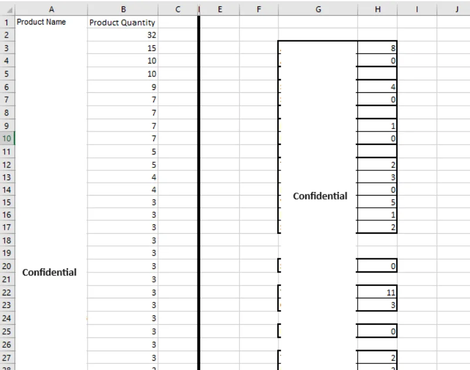
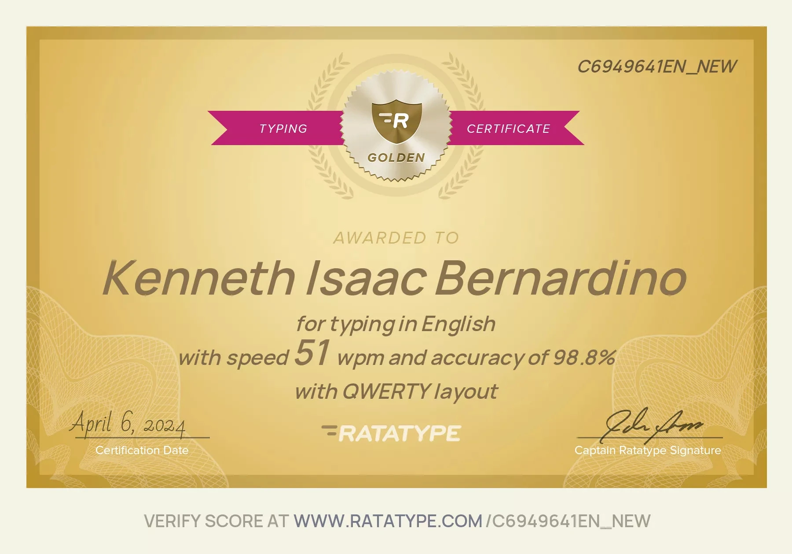

Accurate processing
Careful entry and review to reduce inconsistencies.

Structured data-entry samples demonstrating careful organisation, consistent formatting and accuracy-focused processing.
These examples show practical data handling across organised records and repeatable entry tasks. The work emphasises accuracy, clear structure and dependable completion.
Careful entry and review to reduce inconsistencies.
Information arranged in clear, repeatable formats.
Visual review and validation before completion.







Browse the other work categories or review the résumé for professional experience, education and credentials.